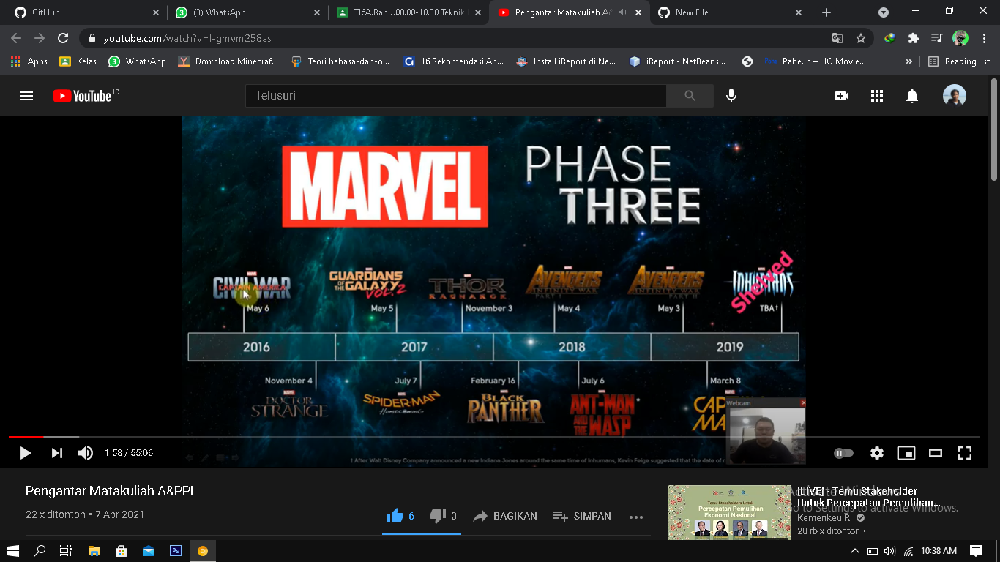

NIM : 1811500061
Nama : Adi Syachputera
Kelompok : TI6A
Hasil saduran saya :
1) ada file di google classroom, berisi link youtube dan materi pembelajaran
2) isi dari kedua tersebut sama, yang berbeda di youtube di beri penjelasan langsung oleh dosen yang bersangkutan
3) dari penjelasan di youtube, pertama membahas sedikit tentang etika yang diberi contoh pada beberapa percakapan
4) membahas media belajar yang dapat di akses yang memiliki fungsi-fungsi yang berbeda
5) menjelaskan pembagian nilai, mulai dari absen, tugas, uts, dan uas
6) kemudian ditugaskan menyadur setiap hasil pertemuan di github
7) bagi yang belum tahu cara menyadur, disana dijelaskan bagaimana caranya
8) kemudian ada juga sedikit pengelanan materi kuliah yang akan di bahas nanti
9) juga ada diberi gambaran sedikit untuk KP
10) dan kita di perliatkan gambar naruto
11) terakhir penjelasan tentang kegiatan pada setiap pertemuan kuliah nanti
